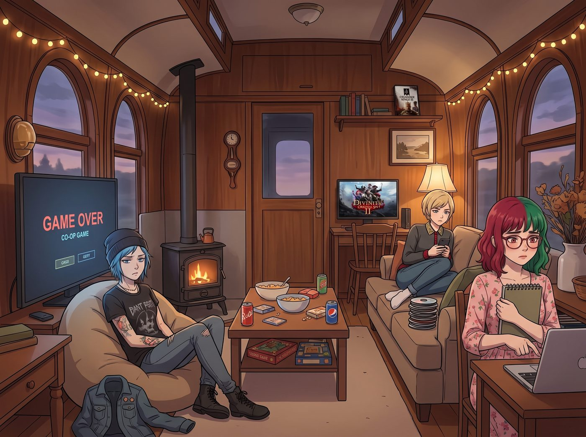

底線的距離

那個令人毛骨悚然的遊戲之夜過後，二號車廂裡瀰漫著一種微妙的、心照不宣的緊繃感。
接下來的兩天，Chloe 破天荒地沒有再碰《神界：原罪2》，Victoria 的《十字軍之王3》也被悄悄關進了資料夾最深處，就連 Lily 面對《邊緣世界》的圖示，手指都會不自覺地遲疑半秒。
而 Kate，依然像平常一樣，繫著圍裙在廚房裡哼著歌，彷彿那晚的「神學解讀」只是一場所有人集體做過的噩夢。
一、旁敲側擊的試探
「所以……」某個下午茶時間，Chloe 假裝隨意地攪拌著咖啡，眼神卻死死盯著 Kate 的背影，「Kate，妳那天說的那些……剝皮做沙發、封死出口燒死全村的話，就只是開玩笑的吧？對吧？」
「當然是玩笑話呀，Chloe。」Kate 頭也不回地回答，語氣輕快得像是在討論天氣。
Victoria 端著茶杯的手停在半空中，忍不住插了一句：「可是妳說的時候，語氣一點都不像在開玩笑。妳連『顛茄毒酒』這種具體的中世紀處決方式都能脫口而出，這個細節連我都要查資料才知道。」
「這只是我平常看的一些歷史書和聖經故事裡剛好提到的呀。」Kate 依然笑得雲淡風輕，開始把烤盤裡的餅乾一片片鏟起來。
坐在角落的 Lily 推了推圓框眼鏡，一直沒有說話。她心裡的合規演算法正在瘋狂運轉，試圖為 Kate 那晚的言論建立一套合理的邏輯模型，卻始終找不到收斂的解。
二、被戳破的偽裝
「Kate，」Max 放下手裡的相機，語氣少見地認真，「妳不用一直裝作什麼都沒發生。那天晚上……妳說那些話的時候，眼神真的很不一樣。我們都嚇到了，但我更想知道的是——那是真的妳，還是只是妳一時興起說的過火玩笑？」
廚房裡的動作聲停了下來。
Kate 沉默了幾秒，然後緩緩轉過身，臉上那層習慣性的溫柔笑容褪去了一些，露出了底下更真實、也更複雜的神情。
「……好吧。」小天使輕輕嘆了口氣，在中島台前坐了下來，「那天，我確實是故意想嚇嚇你們的，那些話有一半是誇張的玩笑。但另一半……」
她低下頭，看著自己交疊在一起的雙手。
「另一半，是真的存在於我心裡的想法。」
三、有選擇性的正義
車廂裡陷入了一片安靜。四個人的目光都聚焦在了 Kate 身上，等待著她的解釋。
「我一直都知道，自己心裡藏著一些……不太符合『大天使』形象的念頭。」Kate 的聲音很輕，卻異常清晰，「從很小的時候開始，每次看到有人欺負弱小、利用別人的信任去傷害別人，我腦海裡都會閃過一些非常……徹底的解決方式。不是那種『原諒他吧，他也有苦衷』的念頭，而是『這種人不該被留在這個世界上繼續傷害別人』的念頭。」
Chloe 屏住了呼吸，想起了 Kate 曾經提過的、那位她們一起處理過的貪婪牧師——那個利用信眾的信任斂財多年、甚至間接害死過人的偽善者。當時 Kate 展現出的冷靜與果決，跟她平時的溫柔判若兩人。
「那個牧師的事件，」Kate 像是讀懂了 Chloe 的心思，抬起頭，眼神變得無比堅定，「我從頭到尾都沒有猶豫過。因為他是真正傷害過人的惡人，他的存在本身，就是對其他人的持續傷害。對付那種人，我心裡那個念頭會非常清晰、非常確定。」
「但是，」Kate 話鋒一轉，語氣重新柔軟下來，帶著一絲近乎歉意的自嘲，「那天晚上，我看妳們在遊戲裡處理那些虛擬的NPC，那個偷藥水的商人也好，Victoria 的虛擬表弟也好，他們都只是遊戲設計出來、根本沒有真實痛苦的數據而已。我卻忍不住把心裡那套『對付真正惡人』的邏輯，套用在這些根本不需要被這樣對待的對象身上，還講得那麼興高采烈……這確實是我沒有分寸的地方，我不應該把那種程度的想法，用來嚇唬妳們、當成餘興節目。」
四、鬆了一口氣的家人
聽完這番坦誠的解釋，車廂裡的緊繃感終於慢慢消散了。
「所以，」Victoria 謹慎地確認道，「妳心裡確實有那種……很極端的念頭，但妳只會用在真正的壞人身上？」
「是的。」Kate 點點頭，眼神真誠，「而且，就算是對付真正的惡人，我也不會真的去做那些殘忍的事情，我只是……心裡會清楚地知道，這樣的人不值得被同情。至於具體要怎麼處理，我還是會交給你們，交給法律，或者交給 Lily 的合規武器。我只是……偶爾腦子裡會冒出那些念頭而已。」
Chloe 長長地舒了一口氣，整個人癱回了沙發上：「老天，妳這樣解釋，我反而安心多了。至少我知道，只要我不變成那種罪大惡極的人渣，妳就不會半夜把我做成沙發。」
「Chloe，你怎麼可能會變成那樣的人。」Kate 忍不住笑了出來，重新露出了那個熟悉的、溫暖的笑容，「你脾氣壞、嘴巴壞，但你的心一直很乾淨。」
Lily 若有所思地在筆記本上寫下了幾個字，然後抬起頭，露出了乖巧的微笑：「Kate 學姐，根據您剛才的陳述，我已經重新建立了一套邏輯模型：您的判斷標準是『行為是否對真實個體造成過不可逆的傷害』，而非單純的『虛構情境下的角色扮演』。這是一套非常自洽、且符合比例原則的道德框架，我完全可以理解了。」
「而且，」Lily 補充道，眼神裡帶著一絲罕見的、近乎崇拜的光芒，「這也代表著，Kate 學姐才是我們車廂裡，唯一一個真正擁有『無需法條、也能精準判斷善惡邊界』能力的人。這種天賦，是我竭盡一生鑽研法規都無法企及的。」
聽著 Lily 這番罕見的、發自內心的稱讚，Kate 有些不好意思地紅了臉，起身重新端起那盤已經冷掉的肉桂捲。
「好啦，大家不要再說這麼嚴肅的話題了，餅乾都要涼了。」小天使溫柔地將點心分給眾人，「今晚要不要繼續玩遊戲呀？不過，Chloe，這次可以拜託妳，讓妳的角色對NPC溫柔一點嗎？就算是虛擬的，看妳們亂殺無辜商人，我還是會忍不住心疼的。」
「遵命，聖母大人。」Chloe 咧嘴一笑，終於徹底放鬆了下來。
那晚過後，二號車廂又恢復了往常的熱鬧與吵鬧。而所有人心裡都多了一份清晰的認知：Kate Marsh 的溫柔從來不是沒有原則的軟弱，她心底那份清醒而堅定的正義感，才是這個瘋狂家庭裡，最讓人安心的底線。